АПК-32 на шасси МАЗ 5340B3
Автомобильный гидравлический подъёмник, совмещённый с лестницей
Подробнее в каталоге →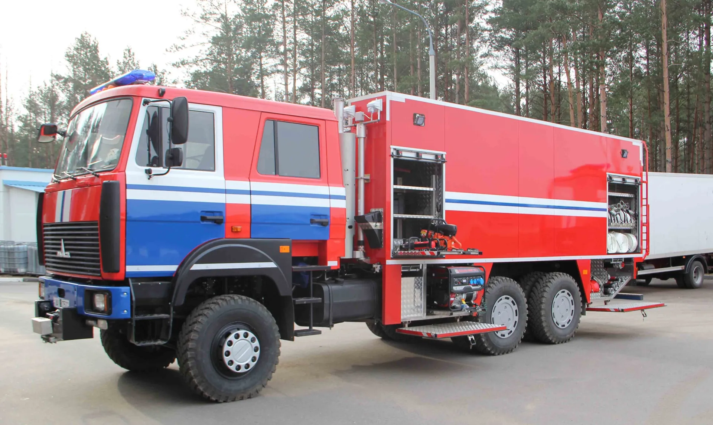
ООО «ЗСПТ» · Орша · Минск
Производство и поставка противопожарного и аварийно-спасательного оборудования: пожарные автомобили, дыхательные аппараты со сжатым воздухом, компрессоры и оборудование для баз ГДЗС. Гарантийное обслуживание и сервис.
Направления
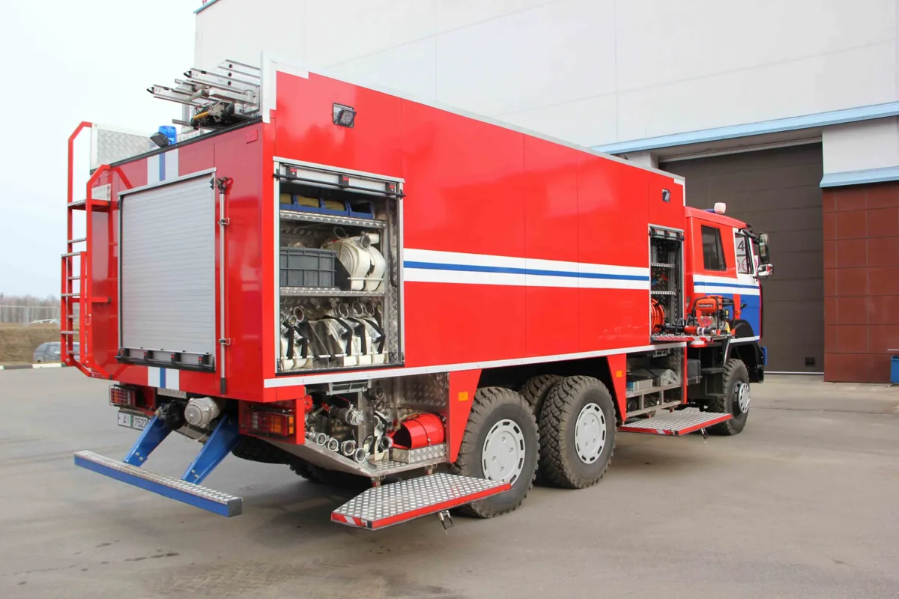
Пожарные автоподъёмники и автолестницы, автоцистерны пожарные, специальная техника.
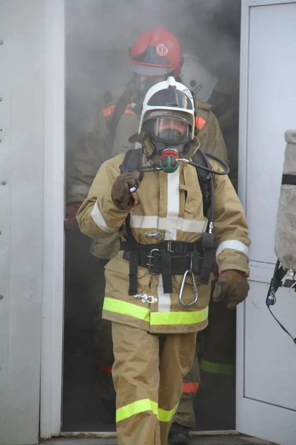
Аппараты со сжатым воздухом и замкнутого цикла, лицевые части, баллоны, оборудование для тестирования, компрессоры и запчасти.
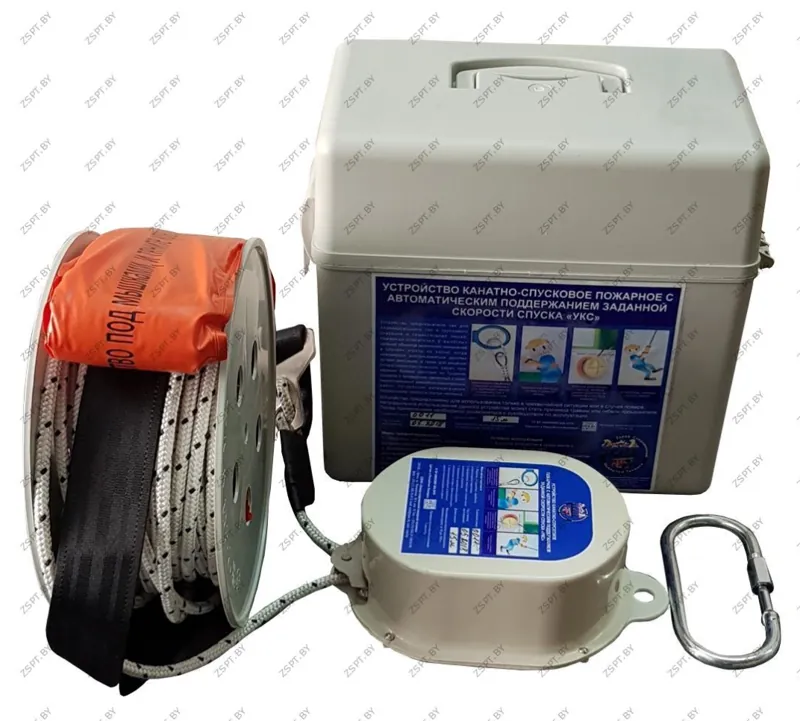
Самоспасатели, шлемы, обувь пожарного, фонари, аварийно-спасательный инструмент, устройства канатно-спусковые.
Для отопления и горячего водоснабжения. Фото и описание — уточнить
Каталог
Автомобильный гидравлический подъёмник, совмещённый с лестницей
Подробнее в каталоге →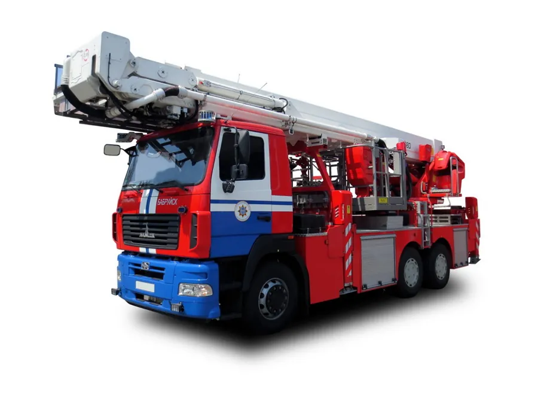
Автомобильный гидравлический подъёмник, совмещённый с лестницей
Подробнее в каталоге →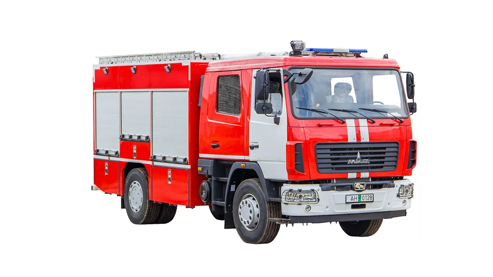
Автоцистерна пожарная
Подробнее в каталоге →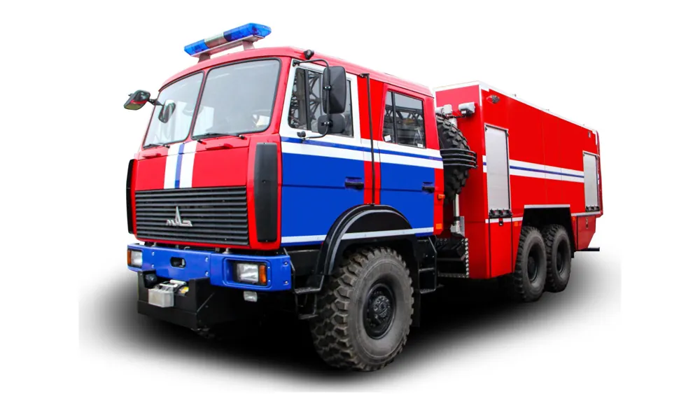
Автоцистерна пожарная
Подробнее в каталоге →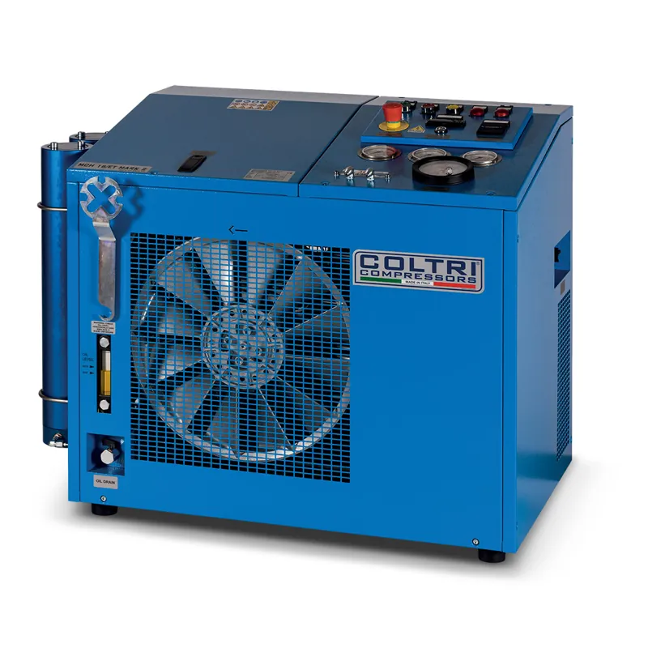
Компрессоры воздуха для дыхания
Подробнее в каталоге →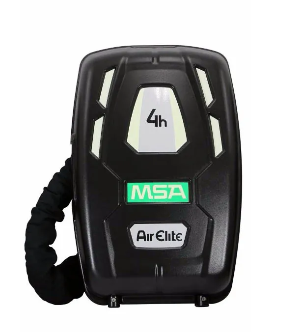
Дыхательный аппарат замкнутого цикла
Подробнее в каталоге →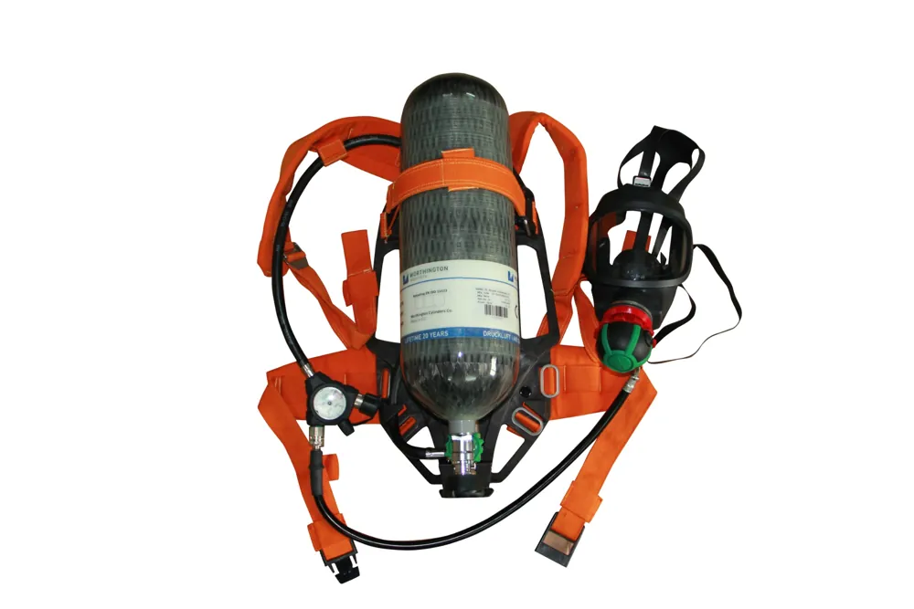
Дыхательные аппараты со сжатым воздухом
Подробнее в каталоге →Пожарные, с автоматическим поддержанием заданной скорости спуска
Подробнее в каталоге →Сервис
Пожарная техника, специальная техника, дыхательные аппараты со сжатым воздухом и оборудование для ГДЗС. Сервисное обслуживание также может проводиться по месту эксплуатации техническими специалистами нашей компании.
Сервисная служба в г. Орша: +375 44 586 91 31
О компании
Один из ведущих производителей и поставщиков противопожарного и аварийно-спасательного оборудования: дыхательных аппаратов со сжатым воздухом, проверочного и компрессорного оборудования, а также запасных частей для их технического обслуживания.
Штат состоит из квалифицированных технических специалистов, прошедших обучение и сертифицированных партнёрами-поставщиками оборудования. Принципы работы: поставка качественного современного оборудования, конкурентоспособные цены, гарантийное обслуживание и сервис, индивидуальный подход к каждому клиенту.
Лидирующие позиции на рынке. Срок работы компании — уточнить (на сайте указано «5 лет», в подвале — «2012–2023»)
Вся продукция из каталога и прайс-листа доступна сразу после заказа.
Для обеспечения вашей безопасности используем ведущие технологии.
Ремонт, диагностика, настройка пожарных машин и дыхательных аппаратов MSA.
Поставки
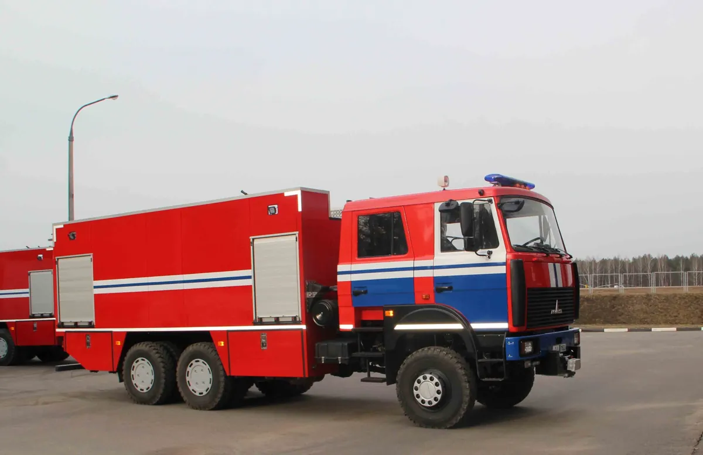
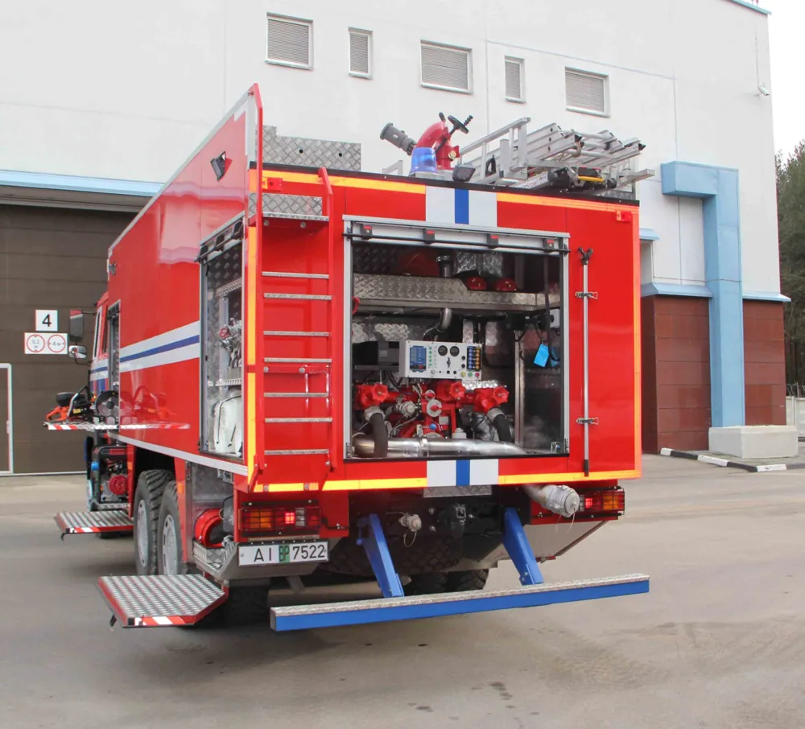
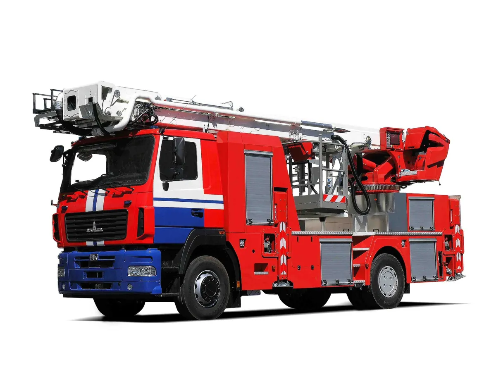
Поставлены и эксплуатируются АЦ, АКП, компрессоры и дыхательные аппараты, а также ПТВ и СИЗ.
Поставлены и эксплуатируются компрессоры, дыхательные аппараты и баллоны для сжатого воздуха.
Поставлены и эксплуатируются АЦ пожарные.
Партнёры
Aerotecnica Coltri, WISS, MSA, Techplast (SAFER®), STAKO, Worthington, Brandbull, Latakva Fire Service, Szybicki, ООО «Ильберс» и другие.
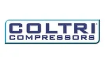
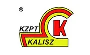
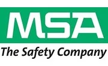
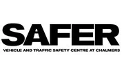
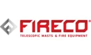
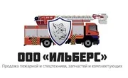
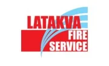
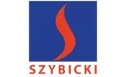
Заявка
Опишите задачу — специалист свяжется с вами и ответит на вопросы о продукции, сроках и сервисе.
Или позвоните: +375 17 336 63 01
E-mail: zspt@zspt.by
Контакты
220138, г. Минск, ул. Липковская, д. 22/2-1
+375 17 336 63 01 — городской
+375 17 336 63 02 — городской
+375 29 127 99 00 — мобильный
Пн–Пт: 8:30–17:30
211384, г. Орша, ул. Шкловская 2-я, 22А, каб. 16
+375 216 54 76 61 — городской
+375 216 54 76 62 — тел./факс
+375 44 586 83 89 — мобильный
+375 44 586 91 31 — сервисная служба
+375 216 54 73 85 — отдел снабжения
+375 29 692 69 91 — отдел кадров
Пн–Пт: 8:00–17:00
E-mail: zspt@zspt.by